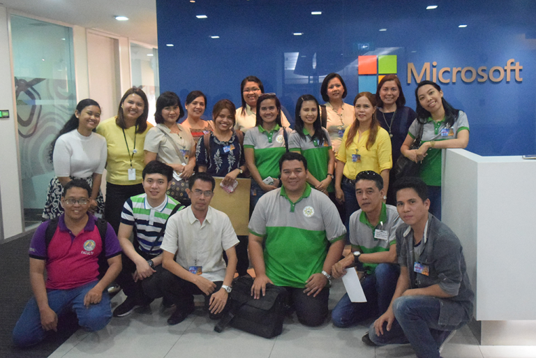
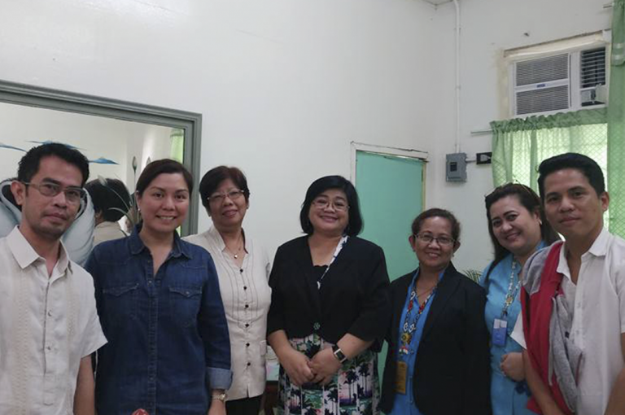
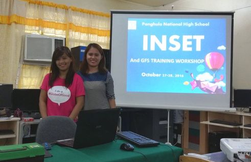
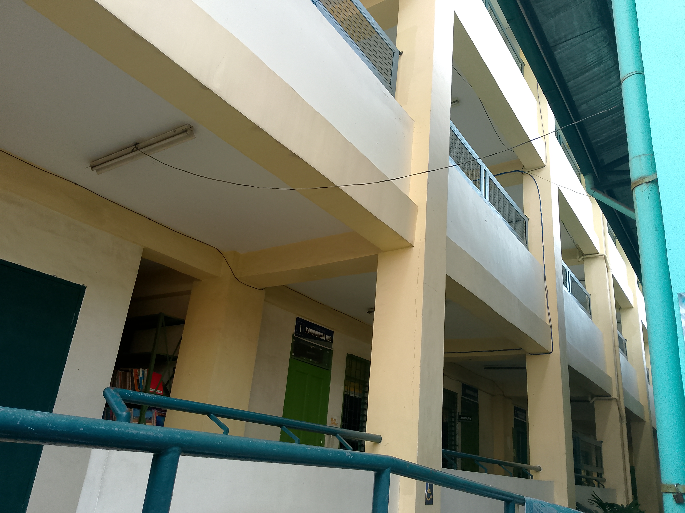
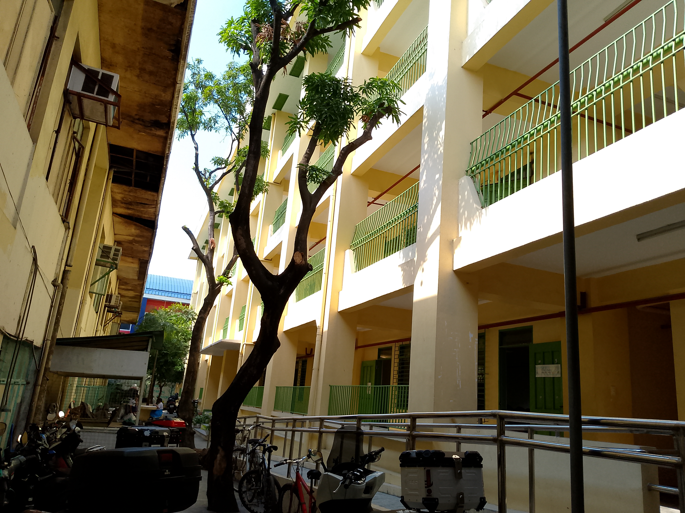
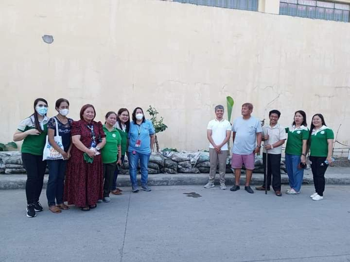
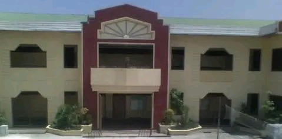

Welcome to Panghulo National High School
We are facing the new normal with a positive
approach and taking the challenge head-on for
our students and stakeholders.
To our learners,
We believe we can succeed in this together.
In these critical times
Don't ever hesitate to tell us whatever you need.
Panghulo National High School is a public-sectarian school, located in Barangay Panghulo, Malabon City, Philippines. It is one of the major high schools in the city of Malabon.
Panghulo National High School was founded on 1968. It was first called Panghulo Barrio High School then Panghulo Barangay High School. Later it was called Malabon Municipal High School (Panghulo Annex) to Malabon National High School (Panghulo Annex). Panghulo National High School was then called as its present name.
Principal Sr. Julius Jaylo

Four PNHS Faculty Named Microsoft Ambassadors
Four faculty members of the Senior High School are among this year’s Microsoft Education Ambassadors. Jomar L. Chua, Andres P. Bonifacio, Maria Aurea R. Jabon, and Jasmin Uy will be joining a group of individuals from all over the country who were selected based on their competency and passion for education, technology and teaching.

Project AWARE 2 will equip PNHS graduates for job
JP Morgan Chase Foundation and the Education Development Center (EDC) chose Panghulo National High School as the first and the only beneficiary of Project AWARE 2 (Accelerating Work Achievement and Readiness for Employment 2) among the schools in the Division of Malabon City last February 21, 2017.

Globe Telecom selects PNHS Global Filipino School
Panghulo National High School, the first and the only school in the Division of Malabon City is among the lucky schools in the country to benefit under the Global Filipino School (GFS) program of Globe Telecom. GFS is a long-term educational initiative that seeks to transform select public schools into centers of excellence in innovative teaching methods and Information and Communications Technology.
Places of Panghulo National High School

Senior High Building
This is the building of Senior High Building where grade 11 and grade 12 study, we have different strand: ABM, Home Economics, and ICT.

School Ground
This is the School Ground where all events in school happens like flag ceremony happen and flag retreat

Junior High Building
This is the building of Junior High School where grade 7, 8 ,9 ,10 study, there are 8 subjects in junior high: E.S.P, Math, TLE, Filipino, English, Science, MAPEH, A.P
About Panghulo National High School

Panghulo National High School is built for
Organized spaces purposed for teaching and learning. The classrooms where teachers teach and students learn are of central importance. Classrooms may be specialized for certain subjects, such as laboratory classrooms for science education and workshops for industrial arts education.
Why you should study in Panghulo National High School
It uses every resource, advantage, gift, and opportunity it has to grow students and tends to see more resources, advantages, gifts, and opportunities than lower-performing schools. A good school has students who get along with and support one another towards a common goal–and they know what that goal is.

The history of Panghulo National High School
Was founded on 1968. It was first called Panghulo Barrio High School then Panghulo Barangay High School. Later it was called Malabon Municipal High School (Panghulo Annex) to Malabon National High School (Panghulo Annex). Panghulo National High School was then called as its present name.
D e p E d
|
DepEd VISION |
|---|
|
We dream of Filipinos
who passionately love their country
and whose values and competencies
enable them to realize their full potential
and contribute meaningfully to building the nation.
|
|---|
|
CORE VALUES |
|---|
|
Maka-Diyos
|
|---|
|
DepEd MISSION |
|---|
| To protect and promote the right of every Filipino to quality, equitable, culture-based, and complete basic education where: Students learn in a child-friendly, gender-sensitive, safe, and motivating environment. Teachers facilitate learning and constantly nurture every learner. Administrators and staff, as stewards of the institution, ensure an enabling and supportive environment for effective learning to happen. Family, community, and other stakeholders are actively engaged and share responsibility for developing life-long learners. |
|---|